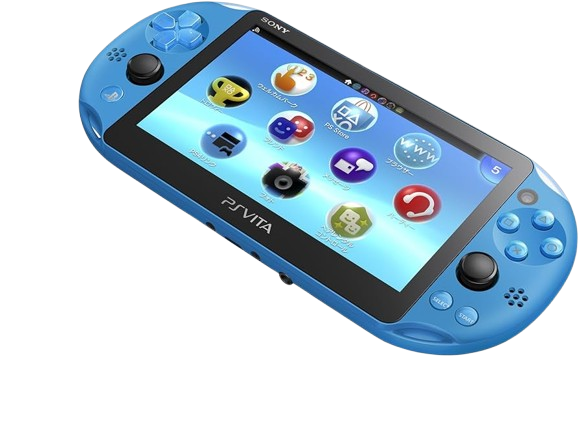

yeah a sticky note on another sticky note is a smart idea for a logo
Idk some niche topic?
so for the past month or two I have been kind of carrying out a lot of thought and looking into some topic that probably seems a bit obsecure
and kinda pointless but I think its worth sharing. That topic being
Handheld consoles are like really underappreciated
Handhelds are probably like the most letdown gaming platform ever man, seriously its like so much potential that is never truly tapped,
and for some reason 90% of big corporations just don't want to dive into it (I mean I guess they have a good reason for that). First of all,
I know you are probably gonna be howling at me now with stuff like "ohh what about the steam deck and all those new handhelds" Well you gotta know
most of these are just portable pcs and to be real with you as cool as they are they don't feel as authentic as an actual dedicated handheld console.
When i was travelling and just moving a lot this summer I noticed I really don't have anyyyy source of entertainment. I download some e-books to read them
on the way but i never do, I might get a movie ready to download but I never watch it either. I just find myself playing some random stuff on my phone every now and then.
I think at that point of time, my eyes opened up to a new world. Handhelds. I thought to myself, why not just get a handheld that can play a couple of good games
for cheap? and that is exactly when I did the equivalent of an old head dumpster diving for a pack of newports
I was a quarter of the way into this book when I realized this was the twelvth part to a book series where each book was a 1000 pages long. That explains why I felt like
I was reading gibberish the whole damn time lmfao
THEEEEE PS Vita (yeahhh)
I am not joking when I say this little console has probably the most dedicated cult following ever. Before I get ahead of myself let me just give you an
intro on what this thing exactly is.
The PS Vita in short was sony's sequel to their PSP. 'Why did they not just call it a PSP2". Honestly I have no clue and as you read this you will start to realize
that these coporations just choose the weirdest most confusing names for those consoles just wait for the next segment. Though I must admit vita rolls off the tongue much
better than a PSP.
At the time when the vita dropped, smartphones were a new and highly rising thing that could play games just like a PSP or nintendo DS. Now at the time people saw this
as completely making the whole handheld market a joke. I mean I got a smartphone now dude, I can play super obaid 23 lite free playthrough on some 5 by 5 cm glass box why would
I need to shell out 200 bucks for a handheld. For the most part that is true, and everyone just unanimously agreed on that even sony did. So to compete
they decide to create a user interface and style the vita in a way that could basically be your new smartphone or just compete with your smartphone.
I can't lie though, they absolutely murdered their design and UI just look at how clean that stuff is and those bubbles feel really cool to use.
Now sony did all that just for the vita to like uhhh barely sell. Yeah..

LOOK AT HOW CLEAN THIS DESIGN IS GOD DAMN
and at 2019 sony just dropped it all. They said enough is enough and packed it up and went on. But that didn't mark the death of the vita. Boy oh boy it didn't. It still has a pretty
active modding community, and believe it or not they somehow manage to port a lot of games to it. Some of the most notable games that I saw ported to the vita
where cuphead and hollowknight. When I first played hollowknight my pc could barely handle it so its pretty impressive to see how they managed to port it to the vita
without much performance issues though I must say the loading times are pretty long. The teams that ported those games are still actively working on porting even more games
to the vita so it will be quite interesting to see what is to come in the future.
Moving onto what probably killed the vita (alongside smartphones and other stuff)...
IT FOLDS???/
I mean they said that when the DS was first released but anyhow the 3ds is one of nintendo's best sellers. That thing made them someeee cash i think 150 million to be exact.
Now when i first started researching the 3DS I noticed it has a pretty terrible naming system let me just show you what I am talking about
So you see this? This is the very first model of the 3ds pretty cool and all
As you can see, this is the 3DS XL. It features a larger screen and I think better processing power but don't take my word for it
Now here is the confusing part, for some reason nintendo re-released all of their 3DS consoles as something new called "new" nintendo 3ds
now that is pretty funny considering that the 3ds now is considered a piece of ancient technology but they could have just I don't know called it
something else rather than this confusing name like uhhh nintendo 4Ds? hehehhahe
This is the "new" 3ds, it looks a lot better not gonna lie and it has this incredibly tiny little pressure thing on the right of it
that I think you will notice now that I mentioned it. That thing acted as like a second C stick or something
In my personal opinion (I will probably get hanged for this), I think the 3DS library is wayyyy better than the Vita library. I have looked at it
and its just the games that were made for the 3DS they were games that were actually dedicated to the 3DS you know, they actually felt like they felt
for the 3DS. You had all the zelda games and mario games made for that console specifically. Now bring the vita and it all had was just ported games
probably like 2 farts worth of exclusives and that was it and I think thats why I titled more towards the vita. Also most of the vita library is just
jrpgs or visual novels and those genres are not really my cup of tea
The market for those consoles is pretty wack
Tell me why I gotta pay around 200 bucks for a vita when I can almost snatch a PS4 for the same price which will probably serve me
way better than the vita. This is a big issue I noticed with those consoles, their companies completely stopped producing them so coming by
them is just stupidly difficult and finding them at a good price is even worse. What really adds salt to the wound is this situation is only going
to get worse as the years pass by cause there is just no new product being made. Almost 300-400 bucks for a new 3ds xl is criminal.
Conclusion
So at the end of the day what did I gain from all this. Nothing. I was at a point in time where I really wanted to buy this and I figured
its all probably not worth it and that I am just gonna use them for a couple of hours and never touch them again. Probably better to save my money
to spend it on a bunch of steam games I am never going to touch either lmfao. But if you are reading this and you probably want to choose something
I would honestly tell you to get a switch lite that is yknowww yknoww the one that has games magically on it yknowww. I recommend it because lets be honest
you are probably not really a diehard fan for them and you just want some portable fun and the switch has like 90% of the vita library ported to it already and it has
wayyyy more games than whatever the 3ds has for like the same price or even cheaper so you will be getting much more use out of that instead.